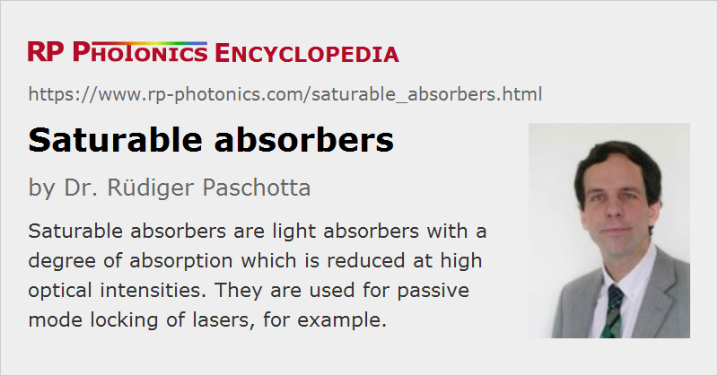

Saturable Absorbers
Definition: light absorbers with a degree of absorption which is reduced at high optical intensities
More specific terms: saturable Bragg reflectors, semiconductor saturable absorber mirrors, artificial saturable absorbers
German: sättigbare Absorber
Categories: nonlinear optics, photonic devices, light pulses
How to cite the article; suggest additional literature
Author: Dr. Rüdiger Paschotta
A saturable absorber is an optical component with a certain optical absorption loss, which is reduced at high optical intensities. Such nonlinear absorption can occur, e.g., in a medium with absorbing dopant ions, when a strong optical intensity leads to depletion of the ground state of these ions. Similar effects can occur in semiconductors, where excitation of electrons from the valence band into the conduction band reduces the absorption for photon energies just above the band gap energy. There are also artificial saturable absorbers (see below), where there is no real absorption, but an optical loss which decreases for increasing optical power.
The main applications of saturable absorbers are passive mode locking (i.e., as mode locking devices) and for Q switching of lasers, i.e., the generation of short optical pulses. However, saturable absorbers are also useful for purposes of nonlinear filtering outside laser resonators, e.g. for cleaning up pulse shapes, and in optical signal processing.
Some saturable absorbers are used in transmission, while others are reflective devices. As an example for the latter, Figure 1 shows how the reflectivity of a slow saturable absorber device (a SESAM, see below) varies with the saturation parameter, which is related to the incident pulse energy. The reflectivity for pulse is calculated as the ratio of reflected to incident pulse energy. Note that the actual reflectivity varies with time; it is initially lower but then rises due to absorber saturation.
Types of Saturable Absorbers
As different applications require saturable absorbers with very different parameters, different devices are used:
- Particularly for passive mode locking (but also for Q switching), semiconductor saturable absorber mirrors (also called SESAMs) are frequently used [5]. These are also suitable for passive Q switching, particularly at lower pulse energies.
- Other semiconductor saturable absorbers for mode locking or Q switching are based on quantum dots e.g. of lead sulfide (PbS) suspended in glasses [9].
- Gallium arsenide (GaAs) is also sometimes used for passive Q switching of 1-μm lasers, even though the photon energy of these lasers is below the bandgap in that case. Certain crystal defects play an important role for the absorption.
- Thin layers of carbon nanotubes (CNT), in particular single-wall nanotubes, have been used for mode locking of lasers [13, 16, 17]. Such absorbers can exhibit very broadband absorption features as are desirable for broadband lasers. One can, for example, apply thin layers of nanotube to fiber ends and use them mode locking of very compact fiber lasers, offering high pulse repetition rates [20]. The recovery time of nanotube absorbers is quite short, but substantial non-saturable losses can be a problem for some applications.
- Similarly, single or multiple graphene layers can be used as broadband saturable absorbers. Single graphene layers have a relatively low modulation depth.
- In some mode-locked diode lasers, a saturable absorber section is created simply by not pumping that region. A faster recovery can be obtained by implanting nitrogen (N+) ions.
- For passive Q switching of solid-state lasers in the 1-μm spectral region, Cr4+:YAG saturable absorber crystals are most popular [14, 11]. (Cr:YAG crystals are also used as gain media → chromium-doped gain media.) For 1.3-μm lasers, V3+:YAG can be used [10], whereas Co2+:MgAl2O4, some other cobalt-doped crystal materials as well as Cr2+:ZnS and Cr2+:ZnSe can be used in the 1.5-μm spectral region. There are also laser crystals with an integrated saturable absorber dopant – for example, with Cr4+ in a Nd3+-doped laser crystal, such as Nd:Cr:YVO4.
- In rare cases, saturable absorber materials are used in the form of optical fibers. For example, chromium, samarium or bismuth dopants can serve this function in Q-switched fiber lasers [15].
Artificial Saturable Absorbers
There are also various kinds of artificial saturable absorbers. These are devices which exhibit decreasing optical losses for higher intensities, but not actually exploiting saturable absorption (or in fact any absorption). Such devices can be based on e.g.
- Kerr lensing combined with some kind of aperture (→ Kerr lens mode locking) [4]
- a nonlinear mirror device containing a frequency-doubling crystal, as sometimes used for passive mode locking of solid-state bulk lasers [2]
- a nonlinear fiber within an auxiliary resonator (→ additive-pulse mode locking) [7]
- nonlinear polarization rotation in a fiber, combined with a polarizing element, often used for passive mode locking of fiber lasers [8]
- a nonlinear fiber loop mirror, also used for mode locking of fiber lasers [3]
- an array of waveguides, exhibiting nonlinear coupling [18]
Properties of Saturable Absorbers
The most important properties of saturable absorbers are:
- The modulation depth is the maximum possible change in optical loss, specified in percent, for example.
- The non-saturable losses are the (typically unwanted) part of the losses which can not be saturated. This can result from defect centers in SESAMs, or from excited-state absorption in case of doped-insulator absorbers such as Cr4+:YAG.
- The recovery time is the decay time of the excitation after an exciting pulse. This should be very short for passive mode locking, but not too short for passive Q switching.
- The saturation fluence is the fluence (energy per unit area) it takes to reduce the initial value to 1/e (≈ 37%) of its initial value. A large saturation fluence can often be compensated by using a tightly focused beam in the absorber.
- The saturation energy is the saturation fluence times the mode area. Strong saturation occurs for incident optical energies above the saturation energy.
- The saturation intensity is the optical intensity (power per unit area) that it takes in a steady state to reduce the absorption to half of its unbleached value. Note that many absorbers are never operated in the steady state, and might even be destroyed when trying to keep them saturated over longer times.
- The saturation power is the saturation intensity times the mode area.
- The damage threshold (in terms of intensity or fluence) constitutes an upper limit for the operation parameters.
When dealing with pulses, a fast saturable absorber is one with a recovery time well below the pulse duration, whereas a slow absorber is one with a recovery time well above the pulse duration. This means that the same device may be either a fast absorber or a slow absorber, depending on the pulses with which it is used. A fast absorber is not necessarily better suited e.g. for passive mode locking; in fact, self-starting mode locking is more easily achieved with a slow absorber.
The saturation parameter of a slow saturable absorber (e.g. in a mode-locked laser) is the ratio of the incident pulse fluence to the saturation fluence of the device. For a fast absorber, it is the pulse peak intensity divided by the saturation intensity.
Note that absorber parameters often refer to a simple absorber model, which is based on assumptions which are not necessarily fulfilled by a real absorber. Some examples:
- A model may have a simple exponential law for the loss recovery after pulse, while the actual absorber may have more complicated characteristics (e.g. a double-exponential decay).
- There may be additional effects like two-photon absorption which cause an increase of absorber loss for rather intense pulses.
- Particularly some kinds of artificial saturable absorbers (see above) exhibit a transmission versus optical power which is reduced again when the device is overdriven, i.e., operated with too high incident power.
For such seasons, a set of absorber parameters may not completely describe the actual characteristics. Another aspect is that the spatially variable degree of absorption due to the transverse intensity profile of a laser beam is often ignored in simple calculations.
Selecting a Suitable Saturable Absorber
It depends very much on the concrete circumstances what properties of a saturable absorber are desirable. In particular, there are important differences between the requirements for Q switching and mode locking of lasers.
Typical requirements on a saturable absorber for a passively Q-switched laser are:
- The total non-saturated absorption must be relatively high – often slightly smaller than the small-signal gain of the laser medium, if a high pulse energy and short pulse duration is desired.
- A low saturation fluence and low non-saturable losses are desirable for minimizing the power losses.
- The recovery time should not be too long (although this problem occurs rarely). On the other hand, ideally it would also not be shorter than the pulse duration. The latter condition, however, is often not essential, particularly when the saturation fluence is far below the pulse fluence.
- The damage threshold in terms of intensity and fluence must be sufficiently high.
For passively mode-locked lasers, the requirements are different:
- The optimum modulation depth is typically quite small – often below 1%, and strongly depending on the type of laser. Tentatively, higher values are required for lasers with high resonator losses.
- The saturation fluence should usually be several times smaller than the pulse fluence under normal operation conditions. (The pulse fluence on the absorber may be adjusted via the beam radius resulting from the laser resonator design.)
- Depending on the mode locking mechanism used, the recovery time may or may not be important for achieving short pulses. For absorbers with a bitemporal response, the slow components may be useful for reliable self-starting characteristics.
- Low nonsaturable losses are again desirable for maximizing the laser's output power and efficiency.
- For avoiding damage of the absorber, the saturation conditions under normal operating conditions are usually of no concern. However, it can be essential to suppress Q-switching instabilities. Surprisingly, there are cases where absorber damage can be avoided by stronger focusing of the intracavity beam on the absorber, because this helps to suppress Q-switching instabilities. In some cases, particularly for high powers and for high pulse repetition rates, heating may be a concern.
Generally, decisions on absorber parameters should be made in the context of a comprehensive laser design processes, which takes into account both the dynamics of pulse generation and the limited tolerance of the absorber to high intensities or pulse energies.
Suppliers
The RP Photonics Buyer's Guide contains 22 suppliers for saturable absorbers. Among them:
Questions and Comments from Users
Here you can submit questions and comments. As far as they get accepted by the author, they will appear above this paragraph together with the author’s answer. The author will decide on acceptance based on certain criteria. Essentially, the issue must be of sufficiently broad interest.
Please do not enter personal data here; we would otherwise delete it soon. (See also our privacy declaration.) If you wish to receive personal feedback or consultancy from the author, please contact him e.g. via e-mail.
By submitting the information, you give your consent to the potential publication of your inputs on our website according to our rules. (If you later retract your consent, we will delete those inputs.) As your inputs are first reviewed by the author, they may be published with some delay.
Bibliography
| [1] | B. K. Garside and T. K. Lim, “Laser mode locking using saturable absorbers”, J. Appl. Phys. 44 (5), 2335 (1973), doi:10.1063/1.1662561 |
| [2] | K. A. Stankov, “A mirror with an intensity-dependent reflection coefficient”, Appl. Phys. B 45, 191 (1988), doi:10.1007/BF00695290 |
| [3] | M. E. Fermann et al., “Nonlinear amplifying loop mirror”, Opt. Lett. 15 (13), 752 (1990), doi:10.1364/OL.15.000752 |
| [4] | T. Brabec et al., “Kerr lens mode locking”, Opt. Lett. 17 (18), 1292 (1992), doi:10.1364/OL.17.001292 |
| [5] | U. Keller et al., “Semiconductor saturable absorber mirrors (SESAMs) for femtosecond to nanosecond pulse generation in solid-state lasers”, J. Sel. Top. Quantum Electron. 2, 435 (1996), doi:10.1109/2944.571743 |
| [6] | A. Sennaroglu, “Continuous wave thermal loading in saturable absorbers: theory and experiment”, Appl. Opt. 36 (36), 9528 (1997), doi:10.1364/AO.36.009528 |
| [7] | J. Mark et al., “Femtosecond pulse generation in a laser with a nonlinear external resonator”, Opt. Lett. 14 (1), 48 (1989), doi:10.1364/OL.14.000048 |
| [8] | M. E. Fermann, “Passive mode locking by using nonlinear polarization evolution in a polarization-maintaining erbium-doped fiber”, Opt. Lett. 18 (11), 894 (1993), doi:10.1364/OL.18.000894 |
| [9] | P. T. Guerreiro and S. Ten, “PbS quantum-dot doped glasses as saturable absorbers for mode locking of a Cr:forsterite laser”, Appl. Phys. Lett. 71 (12), 1595 (1997), doi:10.1063/1.119843 |
| [10] | A. M. Malyarevich et al., “V:YAG – a new passive Q-switch for diode-pumped solid-state lasers”, Appl. Phys. B 67, 555 (1998), doi:10.1007/s003400050544 |
| [11] | Z. Burshtein et al., “Excited-state absorption studies of Cr4+ ions in several garnet host crystals”, IEEE J. Quantum Electron. 34 (2), 292 (1998), doi:10.1109/3.658716 |
| [12] | R. Paschotta and U. Keller, “Passive mode locking with slow saturable absorbers”, Appl. Phys. B 73 (7), 653 (2001), doi:10.1007/s003400100726 |
| [13] | S. Y. Set et al., “Laser mode locking using a saturable absorber incorporating carbon nanotubes”, J. Lightwave Technol. 22 (1), 51 (2004), doi:10.1109/JLT.2003.822205 |
| [14] | H. Ridderbusch and T. Graf, “Saturation of 1047- and 1064-nm absorption in Cr4+:YAG crystals”, IEEE J. Quantum Electron. 43 (2), 168 (2007), doi:10.1109/JQE.2006.889055 |
| [15] | Y. Y. Dvoyrin et al., “Yb-Bi pulsed fiber lasers”, Opt. Lett. 32 (5), 451 (2007), doi:10.1364/OL.32.000451 |
| [16] | A. Schmidt et al., “Passive mode locking of Yb:KLuW using a single-walled carbon nanotube saturable absorber”, Opt. Lett. 33 (7), 729 (2008), doi:10.1364/OL.33.000729 |
| [17] | F. Shohda et al., “147 fs, 51 MHz soliton fiber laser at 1.56 μm with a fiber-connector-type SWNT/P3HT saturable absorber”, Opt. Express 16 (25), 20943 (2008), doi:10.1364/OE.16.020943 |
| [18] | D. D. Hudson et al., “Nonlinear femtosecond pulse reshaping in waveguide arrays”, Opt. Lett. 33 (13), 1440 (2008), doi:10.1364/OL.33.001440 |
| [19] | T. Tsai et al., “Passively Q-switched erbium all-fiber lasers by use of thulium-doped saturable-absorber fibers”, Opt. Express 18 (10), 10049 (2010), doi:10.1364/OE.18.010049 |
| [20] | A. Martinez and S. Yamashita, “Multi-gigahertz repetition rate passively modelocked fiber lasers using carbon nanotubes”, Opt. Express 19 (7), 6155 (2011), doi:10.1364/OE.19.006155 |
| [21] | M. N. Cizmeciyan et al., “Graphene mode-locked femtosecond Cr:ZnSe laser at 2500 nm”, Opt. Lett. 38 (3), 341 (2013), doi:10.1364/OL.38.000341 |
| [22] | Z. Wang, “Stretched graded-index multimode optical fiber as a saturable absorber for erbium-doped fiber laser mode locking”, Opt. Lett. 43 (9), 2078 (2018), doi:10.1364/OL.43.002078 |
| [23] | G. Tanisali et al., “21 fs Cr:LiSAF laser mode locked with a single-walled carbon nanotube saturable absorber”, Opt. Lett. 44 (19), 4662 (2019), doi:10.1364/OL.44.004662 |
See also: nonlinear absorption, semiconductor saturable absorber mirrors, passive mode locking, mode locking devices, mode-locked lasers, Q switching, Q-switched lasers, gain saturation
and other articles in the categories nonlinear optics, photonic devices, light pulses
|  |
If you like this page, please share the link with your friends and colleagues, e.g. via social media:
These sharing buttons are implemented in a privacy-friendly way!